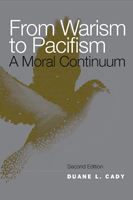

<body bgcolor="#FFFFFF" text="#000000" link="#0000FF" vlink="#CC0000" alink="#CC0000"><center><hr width="350" size="1" align="center" noshade>Illuminating the moral views on violence, from the moral restraint of the just-war tradition through pragmatic nonviolence to principled variations of pacifism<hr width="350" size="1" align="center" noshade><p><a href="https://cdcshoppingcart.uchicago.edu/Cart/ChicagoBook.aspx?ISBN=9781439903117&&PRESS=temple" target="_top">Buy this book!</a> | <a href="https://cdcshoppingcart.uchicago.edu/Cart/Cart.aspx?PRESS=temple" target="_top">View Cart</a> | <a href="https://cdcshoppingcart.uchicago.edu/Cart/Cart.aspx?PRESS=temple" target="_top">Check Out</a></p><p></p></center><!--none//--><h1>From Warism to Pacifism</h1>
<H2>A Moral Continuum</H2>
<H2>Second Edition</H2>
<h3>Duane L. Cady</h3>
<P>cloth 1-4399-0311-5 $75.50, Aug 10, <FONT COLOR=#990033>Available</FONT>
<br>paper 1-4399-0312-3 $28.95, Aug 10, <FONT COLOR=#990033>Available</FONT>
<br>Electronic Book 1-4399-0313-1 $28.95 <FONT COLOR=#990033>Available</FONT>
<BR> 170 pp
5.5x8.25
</P><BLOCKQUOTE><I><em>"The book is strong when it exposes our culture�s uncritical acceptance of war, when Cady shows that violent means are not likely to result in pacific ends and that peace has a harmonic and cooperative content and is not merely the absence of war. Moreover, the author shows that the usual objections against pacifism are answerable... A worthy contribution to the discussion of the morality of war."</em>
<BR>&mdash;<b>Choice</b></I></BLOCKQUOTE>
<p>Duane Cady views warism and pacifism as polar extremes on a continuum that embraces a full spectrum of ethical positions on the morality of war and peace. Realizing that he could not intellectually defend the notions of just-war theory, he found that he was a reluctant pacifist. In this new edition of <i>From Warism to Pacifism</i>, Cady continues to expose the pervasive, subconscious warism that is the dominant ideology in modern Western culture. He explores the changes over the last twenty years-from the end of the Cold War to the ongoing "war on terror," and Barack Obama's winning the Nobel Prize for Peace.</p>
<p>Like racism and sexism, the uncritical presumption that war is morally justifiable, even morally required, misguides our attitudes and institutions. In its place, Cady proposes the development of a positive concept of peace. Citing common objections to pacifist values, he describes peace as something more than the mere absence of war and demonstrates that pacifism is a defensible position.</p>
<BR>&nbsp;<h2>Excerpt</h2><P>Excerpt available at <a href="http://www.temple.edu/tempress">www.temple.edu/tempress</a></p>
<BR>&nbsp;<h2>Reviews</h2>
<p><i>"Cady is to be applauded for authoring a book which is a thought provoking and original contribution to peace and war studies. Teachers and students alike will benefit from his analysis which challenges us to critique the usually subconscious assumption of warism, to more critically investigate the 'wealth of pacifisms' which exist, and to explore the often ignored successes of nonviolence in history." </i><br>&#151<b>Teaching Philosophy </b>
<p><i>"With his fair, careful, and balanced presentations of the 'richness and variety' of the various positions on the moral continuum of war and peace, Duane Cady has gone a considerable way in making 'constructive relationships' possible. Consequently, all who care and think about the issues of violence and war are in his debt." </i><br>&#151<b>International Social Science Review </b>
<p><i>"Cady offers a brilliant analysis showing that once the unintelligent, brutal position of war realism (that no moral restraint in war is required--or even possible) is rejected, the need to specify what moral restraints are possible and morally required first moves discerning inquirers to back up in the direction of just war theory.... Cady rejects both total war and absolute pacifism, forces readers to question an uncritical acceptance of war as normal, shows that violent means do not lead to real peace as their end, distinguishes almost ten varieties of pacifism, and gives readers multiple reasons to substitute some version of pacifism for warism. Summing Up: Highly recommended."</i><br>&#151 <b>Choice</b>
<BR>&nbsp;<h2>Contents</h2><P>
<br>Preface to the Second Edition
<br>Preface to the First Edition
<br>Introduction: A History of the Idea of Pacifism
<br>1. Warism
<br>2. A Just-War Continuum
<br>3. Means and Ends
<br>4. A Pacifist Continuum
<br>5. Positive Peace
<br>6. Objections
<br>7. Implications
<br>Afterword: Nonviolence and the War on Terror
<br>Notes
<br>Index
</P><BR>&nbsp;<H2>About the Author(s)</H2>
<table><tr><td valign="top"><img src="/tempress/authors/630A_au1.gif" height="90" width="75"></td><td width="100%" valign="middle"><p><b>Duane L. Cady</b> is Professor of Philosophy at Hamline University. He is the co-author of Humanitarian Intervention, and author of Moral Vision, plus three anthologies and more than fifty articles on ethics, history of philosophy, and nonviolence. He is a past president of Concerned Philosophers for Peace and served six years on the National Council of the Fellowship of Reconciliation..</P></td></tr></table>
<BR><H2>Subject Categories</H2>
<p><A HREF="/tempress/philosophy.html" TARGET="_top">Philosophy and Ethics</a>
<BR><A HREF="/tempress/general.html" TARGET="_top">General Interest</a>
<BR><A HREF="/tempress/sociology.html" TARGET="_top">Sociology</a>
</p>
<p align="center"><a href="https://cdcshoppingcart.uchicago.edu/Cart/ChicagoBook.aspx?ISBN=9781439903117&&PRESS=temple" target="_top">Buy this book!</a> | <a href="https://cdcshoppingcart.uchicago.edu/Cart/Cart.aspx?PRESS=temple" target="_top">View Cart</a> | <a href="https://cdcshoppingcart.uchicago.edu/Cart/Cart.aspx?PRESS=temple" target="_top">Check Out</a></p><p><font face="Arial" size="1"><a href="copyright.html" onMouseOver="window.status='Web Copyright Policy';return true;" onMouseOut="window.status=''" title="Web Copyright Policy">&copy;</a> 2015 <a href="http://www.temple.edu" target="new" onMouseOver="window.status='Link to Temple University home page';return true;" onMouseOut="window.status=''" title="Link to Temple University home page">Temple University</a>. All Rights Reserved. http://www.temple.edu/tempress/titles/630A_reg.html</font></p>